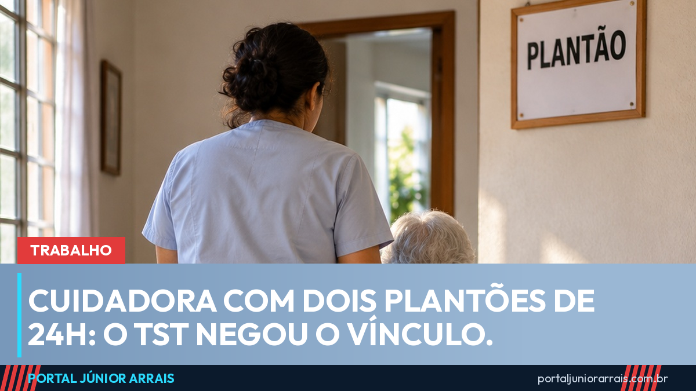

Cuidadora com dois plantões de 24h por semana: TST negou o vínculo, e o tema divide o tribunal

Uma cuidadora de idosos que trabalhava em dois plantões de 24 horas por semana — 48 horas no total — teve o pedido de vínculo de emprego negado pelo Tribunal Superior do Trabalho (TST). A decisão, de 8 de setembro, foi relatada pelo ministro Hugo Carlos Scheuermann (processo RRAg-10756-58.2020.5.03.0002, vindo de Minas Gerais). O entendimento foi que, trabalhando só dois dias por semana, ela não se enquadra como empregada doméstica.
O que diz a lei
A Lei Complementar 150/2015, a lei das domésticas, define como empregado doméstico quem presta serviço de forma contínua, pessoal, subordinada e paga, a uma pessoa ou família, por mais de dois dias por semana. Até dois dias, a regra geral é a da diarista, sem carteira assinada, FGTS ou seguro-desemprego. A mesma lei limita a jornada a 8 horas por dia e 44 por semana, e admite a escala de 12 horas de trabalho por 36 de descanso.
Por que o tema divide o TST
Em setembro de 2023, a 6ª Turma do TST decidiu o oposto num caso quase idêntico, também de Minas: uma cuidadora que fez plantões de 24 horas em dois dias da semana por quase três anos teve o vínculo reconhecido (AIRR-10860-60.2019.5.03.0107, relatora ministra Kátia Magalhães Arruda). Para aquela turma, 48 horas semanais à disposição de uma família mostram trabalho contínuo, que ultrapassa o limite de jornada da lei.
Enquanto não houver uniformização, o resultado pode depender da turma que julga o processo.
Diarista ou doméstica: o que pesa
Não é só a conta de dias. Nesta semana, o TRT de Minas negou vínculo a uma diarista que fazia rodízio com outras profissionais na mesma casa e recebia por diária, via Pix. A Justiça costuma olhar a regularidade, quem define horário e tarefas, se há substituição por outra pessoa e como o pagamento era feito. Para quem já tem a carteira assinada como doméstica, nada muda.
Cuidado com golpe
Decisões assim viram isca de quem promete ganho de causa sem antes olhar o seu caso, cobrando adiantado para "entrar com a ação". Nenhum órgão público cobra taxa ou pede Pix para reconhecer vínculo de emprego.
Se você trabalha ou trabalhou como cuidadora ou diarista e tem dúvida sobre os seus direitos, procure um profissional de sua confiança para avaliar a sua rotina, os pagamentos e as provas que existem.
Conteúdo informativo — não substitui orientação individualizada sobre o seu caso.
Júnior Arrais · Editor do Portal Júnior Arrais
Comunicador de Ubá (MG). Escreve todos os dias sobre benefícios sociais, INSS, trabalho e economia do dia a dia, a partir do Diário Oficial, de portarias e de fontes oficiais, em linguagem simples. Conheça a linha editorial e a política de correções do portal.